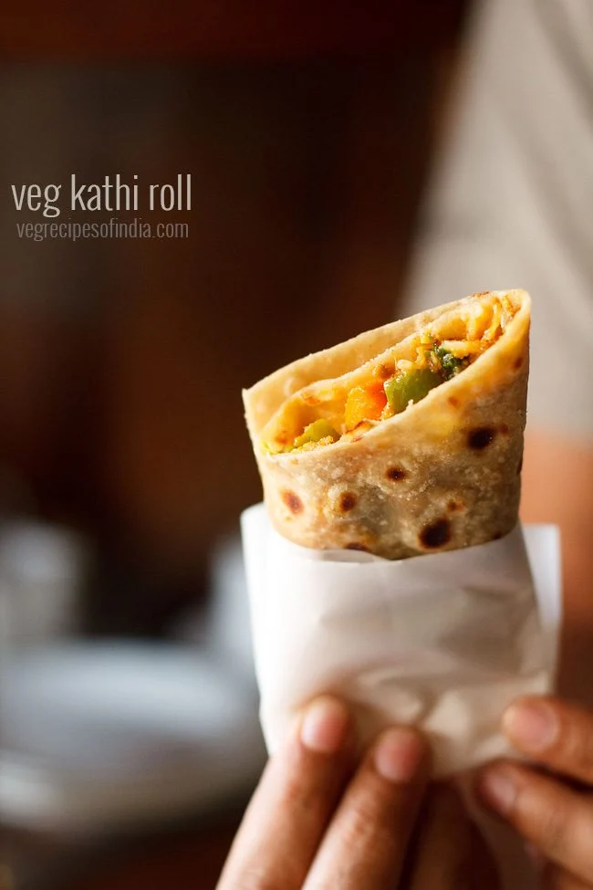

Kathi Roll

Description
Delicious wraps or rolls stuffed with a spiced mix veg stuffing. These mix veg kathi roll make for a good brunch, lunch or tiffin box snack or a portable meal on the go!
It is a skewer-roasted kebab wrapped in a paratha bread, although over the years many variants have evolved all of which now go under the generic name of kati roll.
Today, mostly any wrap containing a filling enfolded in an Indian flatbread (roti) is called a kati roll.
The stuffing is made with mix veggies like cauliflower, green peas, carrots, french beans, capsicum and potatoes.
Ingredients
- 2 tsp oil
- 1/2 capsicum (thinly sliced)
- 2 potatoes (boiled, peeled and mashed)
- 3/4 cup paneer / cottage cheese (crumbled)
- 1 tsp kashmiri chili powder / lal mirch powder
- 1/2 tsp garam masala powder
- 1/2 tsp chaat masala
- salt to taste
Steps
- Firstly, in saute capsicum for 2-3 minutes in some oil.
- Further, add boiled potato and crumbled paneer.
- Add chili powder, garam masala powder, chaat masala and salt.
- Mix well and prepare cylindrical shaped sticks. keep aside.
- Now, add butter onto the tawa.
- And roast leftover chapathi or wraps until they warm up.
- Now place the roasted chapathi or wrap on a flat surface.
- Spread generous amount of tomato sauce.
- Also place lettuce, carrot and onion in the centre of chapathi.
- Further, place the prepared cylindrical stuffing of aloo in center.
- And apply green chutney.
- Now fold the bottom up.
- Also slowly, fold both the sides one after another.
- Roll into aluminium foil or butter paper covering the frankie.
- Finally, veg frankie or kathi roll is ready to serve with tomato sauce.
Back to Homepage